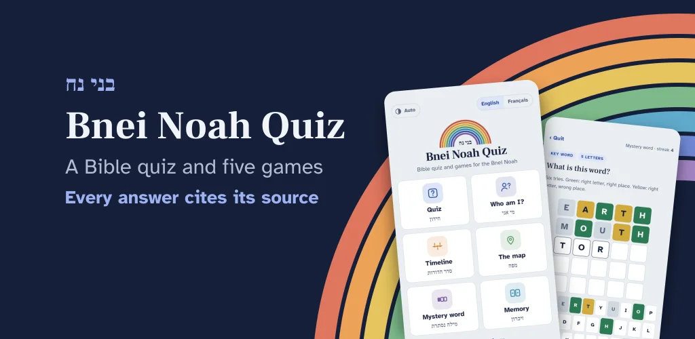
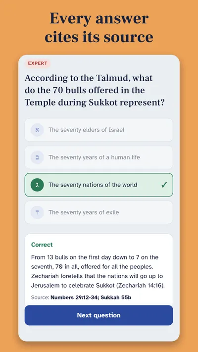
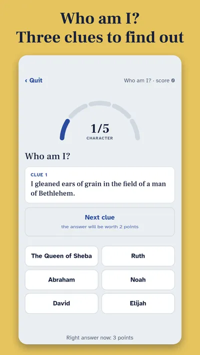
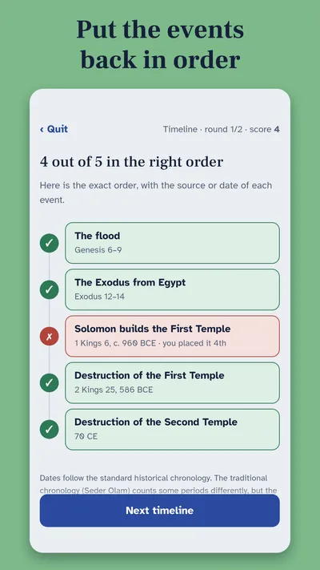
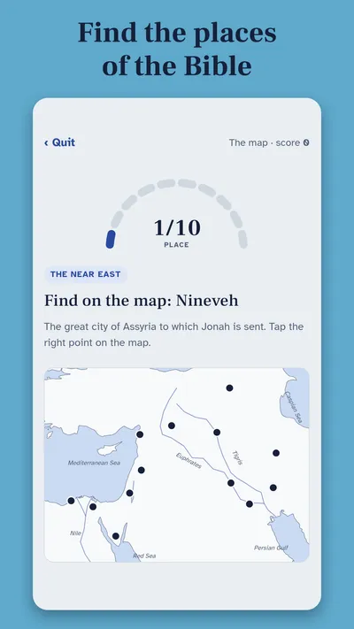
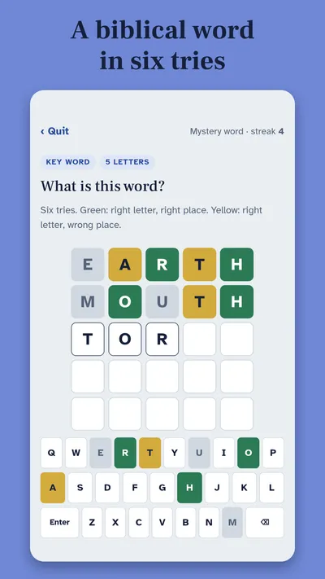

Android closed test
Be one of our first testers
Bnei Noah Quiz is a free Bible quiz for Noahides: 60 questions on the Torah, the Prophets and the Writings, the Second Temple period, Jewish holidays, the seven Noahide laws and biblical Hebrew, with the source of every answer, plus five games.
- Free
- Works offline
- No ads, no account
Your help: before the app can be published on Google Play, Google requires a test with at least 12 people for 14 days. If you have an Android phone or tablet, you can be one of them.
A peek inside





Join the test
- Join the testers group (one click).
- Then open the test link on your Android device, agree to become a tester, then install the app from Google Play. If the link says the test isn’t available, try again a few hours later.
- Stay opted in for at least 14 days and keep the app installed.
- Open the app from time to time, try the quiz and the games, then tell us what you think: a mistake in a question or a source, a bug, anything unclear.